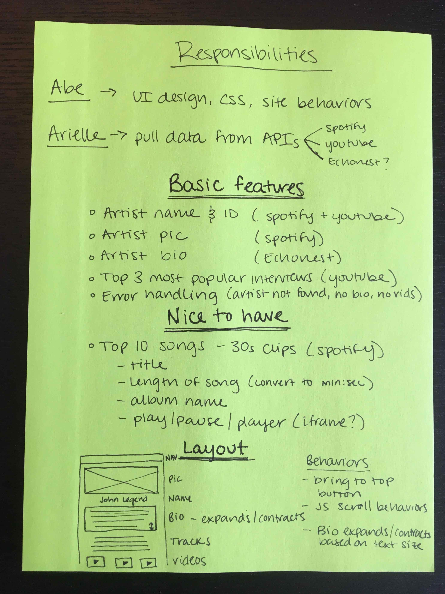

Challenge
I worked with another front-end developer to make a web app that facilitated the process of getting to know more about users’ favorite music artists. My partner was responsible for the UI design and CSS while I pulled data from the Spotify, Echonest, and YouTube APIs.
My partner and I were given the freedom to make decisions about the functionality of the product as long as it pulled data from the Spotify API. We used daily stand ups and scrum methodology to ensure that we built the project on schedule and communicated effectively throughout.
Define
Abe and I were committed to an iterative, collaborative design process so we started off by articulating our responsibilities: Abe focused on UI design and CSS, while I concentrated on pulling data from APIs - a task that I had no prior experience with.
When defining the focal point of the app, we continued to return to the fact that we wished we could find out more about our favorite artists from a singular digital platform, so we decided to make an app that helps users learn about their favorite music artists from a singular digital platform. Knowing the backstories and details of artists' lives makes their music more meaningful - it gives music a broader context. Therefore, our goal was to give users access to biographical information, video interviews, and exposure to artists' work - all in one place.
Build
Since this was a development-focused sprint and we had 10 days to complete the project, we did not have enough time to engage in a rapid prototyping process, so we relied on communication and agile methodology to make sure we were on the same page throughout.
I quickly realized that I needed to use more than just the assigned Spotify API, so I explored various APIs from which to pull biographical information and artist interviews. Using the Echonest, YouTube, and Spotify APIs, Abe and I agreed that I would pull artist biographies (Echonest), their top three most popular interviews (YouTube), 30s clips of their top 10 songs (Spotify), and their name and picture (Spotify).
Abe and I agreed upon our responsibilities. My goal was to tackle the basic features section and leave enough of a time buffer to handle the nice to haves.
Learning Curve
With no prior knowledge of AJAX, JSON, or RESTful practices, I used the CodeSchool and Treehouse platforms (plus a lot of googling) to teach myself these skills as I implemented them. It took a long time to make my first AJAX call correctly but, once I did, everything got a little bit easier. By seemingly console logging everything I could, I familiarized myself with the complexities of multi-threaded JavaScript and pulling data.
Learning new skills on the fly was uncomfortable yet thrilling. Scrum methodology helped me stay aware of what Abe needed from me, though glancing at our scrum board often made me keenly aware of the unsolved problems that lay ahead. That said, it enabled me to manage my time well enough to tackle the 'nice to haves' Abe and I initially outlined (users can listen to 30s clips of artist's top 10 songs), thereby making the exploration experience more comprehensive.
Final Product

Summary
Building a tool without undergoing a rapid prototyping process and user testing felt wrong. I had so many questions about the usability and design of the product yet was unable to test them. That didn't stop Abe and I from discussing potential pain points yet the process felt incomplete; in subsequent projects, I remind myself of the uneasy feeling of building something without research and testing and it serves as one of the many experiences that motivate me to be the best designer I can be. However, gaining adequate time to learn about multithreaded JavaScript and JSON structures served me especially well on projects after DESIGNATION.
I enjoyed working with a partner because we were always honest about what we had difficulties with which, in turn, helped us support each other. This was a great opportunity to learn about helping teammates while working in a high intensity sprint environment; I approach subsequent projects feeling a responsibility to help my partners overcome their challenges.